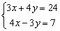

聯立二元一次方程式(應用內置線性回歸功能)
這個功能其實是應用了計數中的內置線性回歸功能，可以解的聯立二元一次方程的形式如下:
x + Ay = B
x + Cy = D
若果不是以上形式亦可以將每一方程的x係數除以該方程轉化為合適的形式，而這個方法有一個限制就是方程式的x係數不可以為零。
例題1: 解聯立方程 :

按 MODE 3 1 (進入線回歸模式及清洗統計記憶)
1 , 7 Data - 1 , 1 Data
Shift 9 → → 1 = (顯示A為4，即x=4)
Shift 9 → → 2 = (顯示B為3，即y=3)
因此解答為 x = 4 及 y = 3.
計算完結後按 MODE 1 返回正常計算模式
例題2: 解聯立方程 :

按 MODE 3 1 (進入線回歸模式及清洗統計記憶)
4÷3 , 24÷3 Data -3÷4 , 7÷4 Data
Shift 2 → → 1 = (顯示A為4，即x=4)
Shift 2 → → 2 = (顯示B為3，即y=3)
因此解答為 x = 4 及 y = 3.
計算完結後按 MODE 1 返回正常計算模式